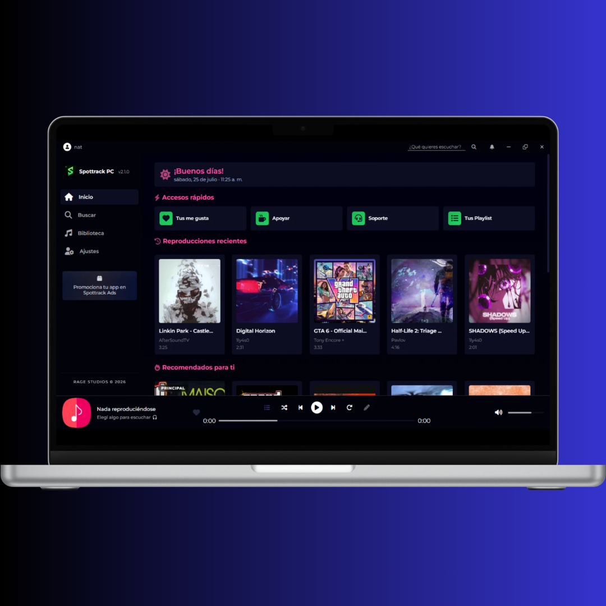

Spottrack es una aplicación de música diseñada para ofrecerte una experiencia de audio excepcional:

Comparación real de funciones y características entre Spottrack y otras apps populares de música.
| Características | Spottrack | Spotify | Apple Music | eSound |
|---|---|---|---|---|
| Anuncios | No | Sí (en plan gratuito) | No | Si (en plan gratuito) |
| Reproducción en segundo plano | Sí | Sí | Sí | Sí |
| Catálogo | Catalogo muy amplio (Todo el catalogo de YT) | Catálogo muy amplio con licencia oficial | Catálogo medio amplio con licencia oficial | Catálogo muy amplio sin licencia oficial |
| Precio | Gratis | Gratis / Premium | Suscripción mensual | Gratis / Premium |
| Compatibilidad | Windows 7/8/8.1 y 10/11 32 y 64 bits. | Windows 10 (64 bits) y 11, macOS, iOS, Android | Windows 10/11, macOS, iOS, Android | Windows 10/11, macOS, iOS, Android |
| Interfaz | Muy buena Moderna y simple | Muy buena Moderna y conocida | Buena Integrada con Apple | Buena Interfaz funcional |
| Optimización | Muy Alta | Media alta | Alta | Media |
| Modo Offline | No (En desarrollo) | Sí (Premium) | Sí | Sí (limitado) |
Instala Spottrack según la versión de Windows que uses.
Versión recomendada y oficialmente compatible.
Para Windows 10/11 en sistemas x86.
Mejor rendimiento en equipos modernos.
Detecta automáticamente si es 32 o 64 bits.
Versión legacy para sistemas antiguos. totalmente compatible, no todas las musicas/videos pueden estar disponibles para reproducir.
Para Windows antiguos en arquitectura x86.
Versión para Windows 7/8/8.1 de 64 bits.
Instalador que detecta automáticamente la arquitectura.
Oportunidades para empresas y marcas que quieren llegar a nuestra audiencia.
Asocie su marca con Spottrack y llegue a millones de usuarios que disfrutan de música todos los días.
Promocione sus productos o aplicaciones dentro del ecosistema de Spottrack.